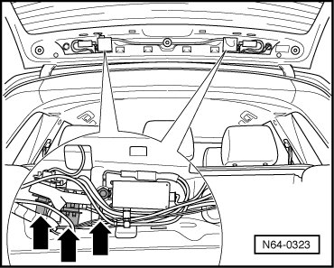
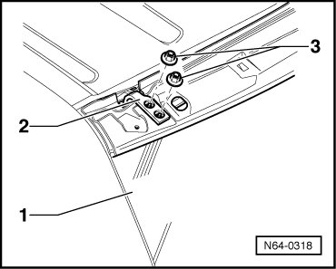

Rear Lid Hinged Window
Rear Lid Hinged Window
- Remove the cover and the rear spoiler. Refer to --> [ Rear Spoiler ] Rear Spoiler

- Separate electrical connections on left and right.
- Loosen the four hex nuts - 3 -.

- Open hinged window.
- Remove nuts - 3 - completely and remove hinged window - 1 - from hinges - 2 - with the assistance of a second technician.